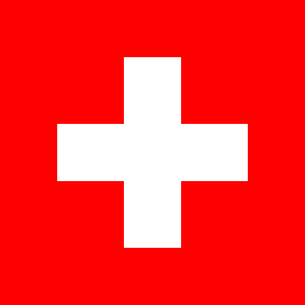
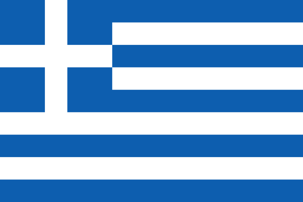

行きたい国はあるけれど、まだ決めきれない。首都や観光名所、名産品などを見比べながら、次の旅先を考えてみましょう。
| 比較項目 |  Switzerland |
 Greece |
||||||
|---|---|---|---|---|---|---|---|---|
| 旅先を知る旅先をひとことで | 芸術と美食、地方ごとの風景を楽しむ国 |
古代遺跡と街の暮らしが隣り合う国 |
建築、食、海辺の時間を楽しめる国 |
大西洋の景色と素朴な街歩きが魅力の国 |
歴史ある街と森や川の風景が広がる国 |
アルプスの山岳風景と鉄道旅を楽しむ国 |
遺跡と島々、地中海の食を味わう国 |
運河と自転車のある街を巡る国 |
| 旅先を知る首都 | パリ |
ローマ |
マドリード |
リスボン |
ベルリン |
ベルン |
アテネ |
アムステルダム |
| 旅先を知る人口 | 約6,800万人 |
約5,900万人 |
約4,900万人 |
約1,000万人 |
約8,400万人 |
約900万人 |
約1,000万人 |
約1,800万人 |
| 旅先を知る主な言語 | フランス語 |
イタリア語 |
スペイン語 |
ポルトガル語 |
ドイツ語 |
ドイツ語・フランス語・イタリア語・ロマンシュ語 |
ギリシャ語 |
オランダ語 |
| 旅先を知る通貨 | ユーロ（EUR） |
ユーロ（EUR） |
ユーロ（EUR） |
ユーロ（EUR） |
ユーロ（EUR） |
スイスフラン（CHF） |
ユーロ（EUR） |
ユーロ（EUR） |
| 旅先を知る代表的な風景 |  |
 |
 |
 |
 |
 |
 |
 |
| 見どころを探す観光名所 1 |  |
 |
 |
 |
 |
 |
 |
 |
| 見どころを探す観光名所 2 |  |
 |
 |
 |
 |
 |
 |
|
| 見どころを探す観光名所 3 |  |
 |
 |
 |
 |
 |
 |
 |
| 見どころを探す街歩きで見たいもの | モンマルトルの坂道とセーヌ川沿い。 |
ボローニャのアーケードと広場。 |
バルセロナのゴシック地区。 |
リスボンのアルファマ地区と坂道。 |
ベルリンのミッテ地区と歴史的建築。 |
ベルン旧市街のアーケード。 |
アテネのプラカ地区と路地。 |
アムステルダムのヨルダーン地区と運河。 |
| 見どころを探す自然を楽しむ場所 | ヴェルドン渓谷。展望やハイキングを楽しむ。 |
ドロミーティ。山歩きや湖畔の景色を楽しむ。 |
ピコス・デ・エウロパ国立公園。山と渓谷を歩く。 |
ペネダ・ジェレス国立公園。森や滝を訪ねる。 |
黒い森（シュヴァルツヴァルト）。森の散策や湖巡り。 |
ユングフラウ地方。山岳鉄道やハイキングを楽しむ。 |
サマリア渓谷。クレタ島の自然を歩く。 |
フェルウェ国立公園。森やヒースの草原を散策。 |
| 食と文化を楽しむ名物料理 |  |
 |
 |
 |
 |
 |
 |
 |
| 食と文化を楽しむ甘いもの・飲み物 |  |
 |
 |
 |
 |
 |
 |
 |
| 食と文化を楽しむ名産品・お土産 |  |
 |
 |
 |
 |
 |
 |
 |
| 食と文化を楽しむ現地で体験したいこと |  |
 |
 |
 |
 |
 |
 |
 |
| 旅を計画するおすすめの季節 | 春〜初夏、初秋。地域で気候が異なる。 |
春〜初夏、初秋。夏は人気観光地が混みやすい。 |
春〜初夏、初秋。海辺は夏がにぎわう。 |
春〜初夏、初秋。海岸の散策に向く。 |
初夏〜初秋。クリスマスマーケットは冬。 |
ハイキングは夏、雪景色やスキーは冬。 |
春と初秋。夏は島がにぎわう。 |
春の花畑、または初夏〜初秋の街歩き。 |
| 旅を計画する滞在日数の目安 | 5〜7日（都市と地方を組み合わせる場合） |
7〜10日（複数都市を巡る場合） |
5〜7日（都市と南部を組み合わせる場合） |
5〜7日（リスボンとポルト周辺） |
5〜7日（都市間移動を含む場合） |
5〜7日（山岳地域を含む場合） |
7〜10日（本土と島を巡る場合） |
3〜5日（アムステルダムと近郊） |
| 旅を計画する国内の主な移動手段 | 高速鉄道TGV、都市の地下鉄・路面電車。 |
都市間鉄道、地下鉄、バス。 |
高速鉄道AVE、地下鉄、バス。 |
都市間鉄道、路面電車、地下鉄。 |
鉄道、都市交通、長距離バス。 |
鉄道・バス網、山岳鉄道、ロープウェイ。 |
都市間バス、鉄道、島へのフェリー。 |
鉄道、路面電車、バス、自転車。 |
| 旅を計画する旅費の目安 | 中〜高（宿泊地や時期で変動） |
中〜高（都市や時期で変動） |
中程度（都市や時期で変動） |
中程度（宿泊地や時期で変動） |
中〜高（都市や時期で変動） |
高め（山岳交通を含むと上がりやすい） |
中程度（島や時期で変動） |
高め（宿泊地や時期で変動） |
| 旅を計画するこんな人におすすめ | 美術館、街歩き、食をじっくり楽しみたい人。 |
古代遺跡、建築、郷土料理に興味がある人。 |
街の文化と海辺の休暇を両方楽しみたい人。 |
海辺の景色や、ゆったりした街歩きが好きな人。 |
歴史ある街、森、鉄道旅を組み合わせたい人。 |
山や湖の景色、ハイキングを楽しみたい人。 |
遺跡、島巡り、地中海の食を楽しみたい人。 |
運河沿いの街歩きや自転車旅が好きな人。 |
人口は概数です。旅費は航空券を含まない相対的な目安で、宿泊地・時期・旅行スタイルによって変わります。